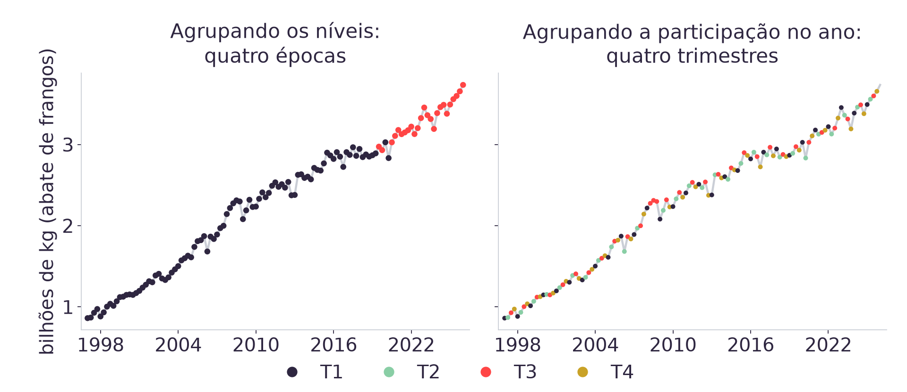
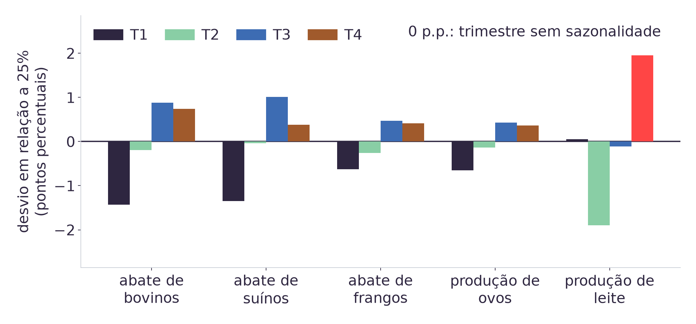

08h00 · 10h00
Autoestudo na Adalove: Introdução ao aprendizado não supervisionado (IBM), K-means, Determinando K: Elbow Plot, Determinando K: Silhouette Analysis e Opcional: PCA [4].
10h00 · 10h15
Daily. Abertura da Sprint 3, com planning em 31/08 e review em 11/09.
10h15 · 12h00
Diagnóstico das Aulas 01 a 05, revisão dirigida, retomada do notebook e K-means sobre as cinco séries do case.
A Aula 05 deixou pronto o Modelo 1 do TAPI: a regressão do abate de frangos, com MAPE de 1,60% contra 1,69% da baseline de coeficiente fixo. Hoje esse modelo volta a rodar na máquina de cada dupla antes de qualquer coisa nova. O diagnóstico das próximas seis perguntas decide quais tópicos a turma revisa, e a única técnica nova do encontro é o K-means, com K fixo em 4, porque escolher K é assunto da Aula 08.
Das cinco séries do SIDRA que estão em dados/,
qual tem o histórico mais longo?
O TAPI pede previsão mensal e o SIDRA publica em trimestre. O que o módulo fez com esse descompasso?
A junção das cinco séries devolve 117 trimestres e a base analítica tem 113 linhas. Onde foram as outras quatro?
Por que o corte entre treino e teste é por data, em vez de sorteio de linhas?
Na janela de teste da Aula 05, quanto o modelo ganha da baseline de coeficiente fixo?
No pipeline da Aula 05, o fit do
StandardScaler viu quais linhas da base?
| Pergunta | Tópico | Slide |
|---|---|---|
| 1 | Aula 03: as cinco séries e o que a EDA procura | 15 |
| 2 | Aula 02: CRISP-DM e a decisão de granularidade | 13 |
| 3 | Aula 04: junção das cinco séries e as defasagens | 17 |
| 4 e 5 | Aula 05: corte temporal, baseline e as métricas de erro | 19 |
| 6 | Aula 04: sazonalidade codificada e padronização | 18 |
| sem pergunta | Aula 01: ler o CSV e conferir os tipos das colunas | 11 |
10h30 · 10h50. A revisão cobre dois ou três destes seis
destinos. Para ir direto a um deles, pressione G, digite o número do slide e
pressione Enter.
Antes de eu abrir o primeiro: qual destes seis vocês querem ver? Levantem a mão no número, e a contagem entra no diagnóstico junto com o resultado do quiz.
import pandas as pd
frangos = pd.read_csv("../dados/abate_frangos.csv")
frangos.shape # (117, 3)
frangos.columns # periodo, valor, unidade
frangos.head(3)
frangos.dtypesTrês comandos respondem se o arquivo entrou certo: shape diz quantas
linhas e colunas chegaram, head mostra as primeiras linhas e
dtypes diz o tipo de cada coluna.
Os cinco CSVs de ../dados/ têm as mesmas três colunas:
periodo, valor e unidade [1]. Todos usam vírgula
como separador e ponto como decimal, então read_csv sem argumento extra
funciona. Se shape devolver menos de três colunas, o separador do arquivo
é outro.
| Coluna | Tipo | O que ela permite |
|---|---|---|
periodo |
object |
Serve de chave na junção e ordena porque o formato é AAAA-Tn. Média
e soma não fazem sentido aqui. |
valor |
float64 |
A medida da série. Aceita mean, diff,
shift e correlação, e é a única coluna que entra no modelo. |
unidade |
object |
Rótulo constante da série: Quilogramas, Mil dúzias ou
Mil litros. Não entra em conta nenhuma. |
Os cinco arquivos chamam a medida de valor, então juntar os cinco sem
renomear faz as colunas colidirem. A Aula 04 troca valor pelo nome da série
antes do merge, e o slide 17 mostra esse código.
Uma coluna numérica que chega como object costuma ter texto escondido
dentro. pd.to_numeric com errors="coerce" converte o que dá e
deixa o resto como ausente, estado em que isna().sum() conta o problema.
O TAPI da LDC pede previsão mensal. O SIDRA publica em trimestre, e é a única fonte aberta com o histórico que o case precisa [1]. As duas coisas não podem ser verdade ao mesmo tempo sem uma decisão explícita.
A decisão foi negociar a granularidade: a previsão sai em 8 trimestres, que cobrem os mesmos 24 meses que o parceiro pediu. Interpolar os trimestres produziria 24 valores mensais com informação de 8, e o modelo aprenderia o formato da interpolação.
Esse descompasso entre o que o parceiro pede e o que o dado oferece é o trabalho do entendimento do negócio no CRISP-DM: a etapa termina quando a pergunta do parceiro está escrita em termos que o dado disponível consegue responder.
| Modelo | Entrada | Saída | Estado no módulo |
|---|---|---|---|
| Modelo 1 | Histórico de produção de proteína animal | Produção prevista | Treinado na Aula 05 para o abate de frangos |
| Modelo 2 | Produção prevista pelo Modelo 1 | Demanda de ração | Recebe hoje o perfil sazonal por espécie |
| Modelo 3 | Demanda de ração | Demanda de macroingredientes | Fora do escopo das aulas construídas até aqui |
Cada modelo consome a saída do anterior, então o erro do Modelo 1 chega inteiro aos outros dois. É por isso que a Aula 05 mediu o erro do Modelo 1 contra uma baseline antes de qualquer coisa ser encadeada nele.
| Série | Registros | Início |
|---|---|---|
producao_ovos | 157 | 1987-T1 |
abate_bovinos | 117 | 1997-T1 |
abate_suinos | 117 | 1997-T1 |
abate_frangos | 117 | 1997-T1 |
producao_leite | 117 | 1997-T1 |
Os quarenta registros a mais de producao_ovos não sobrevivem à junção: o
merge interno da Aula 04 mantém só os períodos que existem nas cinco séries,
e o recorte comum começa em 1997-T1. Os 117 trimestres de hoje saem daí.
serie.describe()
# tendencia
serie.rolling(4).mean()
# sazonalidade
serie.groupby(trimestre).mean()
# saltos e lacunas
serie.pct_change().abs().nlargest(5)
serie.isna().sum()Quatro achados fecham a exploração de uma série: se ela cresce ao longo do tempo, se o valor repete por trimestre do calendário, se existe salto grande entre dois períodos vizinhos e se falta algum período no meio.
Cada um deles decide uma parte do pré-processamento da Aula 04. A tendência entra
como defasagem, o ciclo do calendário vira sen e cos, e um
salto grande manda investigar a fonte antes de o valor virar erro.
# SERIES: os 5 nomes de arquivo de ../dados/
base = None
for nome in SERIES:
col = (pd.read_csv(f"../dados/{nome}.csv")
[["periodo", "valor"]]
.rename(columns={"valor": nome}))
base = col if base is None else base.merge(
col, on="periodo", how="inner")
base.shape # (117, 6)
base["frangos_lag1"] = base.abate_frangos.shift(1)
base["frangos_lag4"] = base.abate_frangos.shift(4)
analitica = base.dropna()
analitica.shape # (113, 8) neste recorteCada arquivo entra só com periodo e valor, e o
rename troca valor pelo nome da série. Sem esse passo as
cinco colunas valor colidem no merge.
O inner pela chave periodo devolve os 117 trimestres em
que as cinco séries existem juntas.
shift(4) copia o valor de quatro linhas atrás, e as quatro primeiras
não têm de onde copiar: ficam ausentes e saem no dropna. Restam
113 linhas, de 1998-T1 a 2026-T1. Com trimestre,
sen, cos e as demais defasagens da Aula 04, a base chega a
15 colunas.
import numpy as np
# analitica: as 113 linhas montadas no slide 17
t = analitica["trimestre"] # 1 a 4
analitica["sen"] = np.sin(2*np.pi*t/4)
analitica["cos"] = np.cos(2*np.pi*t/4)
from sklearn.preprocessing import StandardScaler
# X_treino e X_teste: o corte 105/8 do slide 19
escalador = StandardScaler().fit(X_treino)
X_treino = escalador.transform(X_treino)
X_teste = escalador.transform(X_teste)sen e cos codificam o ciclo de quatro trimestres numa
posição de círculo, de modo que T4 e T1 fiquem vizinhos, como são no calendário.
As defasagens estão na casa de 1e9 e sen e
cos na casa de 1. Sem padronizar, o número de condição da matriz chega a
1,08e10 e o solver de mínimos quadrados perde a contribuição das
colunas pequenas em ponto flutuante.
O fit do escalador vê só o treino: a média e o desvio do teste ficam
fora da conta.
# analitica: as 113 linhas montadas no slide 17
# corte por posicao, sem sorteio
treino = analitica.iloc[:105]
teste = analitica.iloc[105:] # 8 trimestresAs últimas 8 linhas ficam reservadas, e o modelo é ajustado nas 105 anteriores. Sortear linhas poria trimestres de 2026 no treino e mediria interpolação dentro do histórico conhecido [7].
Um MAPE sozinho informa apenas o tamanho do erro. Julgar esse erro exige um número de comparação, e a baseline de coeficiente fixo entrega esse número repetindo a prática que a LDC já usa hoje: 1,60% contra 1,69% na janela de teste, e 2,18% contra 3,14% na média de doze janelas consecutivas.
| Métrica | Unidade | Para que serve aqui |
|---|---|---|
| RMSE | A mesma da série | Diz o tamanho do erro em quilogramas de abate. Penaliza mais os erros grandes, porque eleva ao quadrado antes de somar. |
| MAPE | Percentual | Diz o erro relativo ao valor realizado. É o que permite comparar frango com leite, e o modelo com a baseline. |
Overfitting aparece quando as duas medidas andam em direções opostas: acrescentar uma coluna baixou o MAPE de treino e subiu o de teste. Prever oito trimestres de forma recursiva, realimentando a própria previsão, elevou o MAPE de 1,60% para 2,85%, porque o erro de cada passo entra na entrada do passo seguinte.
- Abram
notebooks/aula06.ipynbpelo badge do Colab da primeira célula. Quem tem o repositório clonado pode rodar local, com o mesmo resultado. - Rodem a célula única da seção 1. Ela busca os cinco CSVs [1], remonta a base de 113 linhas, separa 105 de treino e 8 de teste, ajusta o escalador e a regressão só no treino e imprime os dois MAPE.
- Confiram que saem 1,60% para o modelo e 1,69% para a baseline de coeficiente fixo.
Quem não chegar nesses dois números levanta a mão agora: o restante da aula parte desta base montada, e depurar ambiente às 11h20 custa o bloco de prática inteiro.
from sklearn.preprocessing import StandardScaler
from sklearn.cluster import KMeans
X = StandardScaler().fit_transform(producao)
modelo = KMeans(n_clusters=4, n_init=50,
random_state=42).fit(X)
modelo.labels_ # o grupo de cada trimestre
modelo.inertia_ # dispersao dentro dos gruposO algoritmo não recebe rótulo nenhum. Ele põe quatro centros no espaço das colunas, liga cada trimestre ao centro mais próximo em distância euclidiana e repete até os centros pararem de andar [2].
A distância soma as diferenças de todas as colunas ao quadrado. Sem padronizar, a série de maior magnitude domina essa soma e as outras quatro deixam de influenciar o agrupamento.
K fica em 4 hoje, por decisão de aula. Elbow Plot e Silhouette Analysis, os métodos de escolher K, são assunto da Aula 08 [4].
- Padronizem as cinco colunas de produção com
StandardScaler, sobre os 117 trimestres de 1997-T1 a 2026-T1. - Rodem
KMeans(n_clusters=4, n_init=50, random_state=42)e guardemlabels_. - Imprimam o primeiro e o último trimestre de cada grupo, e a fração de linhas em que o grupo coincide com o trimestre do calendário.
Antes de rodar, cada dupla escreve a própria aposta: o algoritmo vai separar T1, T2, T3 e T4? Guardem a resposta, porque o slide seguinte compara a aposta com o que saiu.
| Grupo | Linhas | Intervalo coberto |
|---|---|---|
| 1 | 30 | 1997-T1 a 2004-T2 |
| 2 | 28 | 2004-T3 a 2011-T2 |
| 3 | 34 | 2011-T3 a 2020-T2 |
| 4 | 25 | 2019-T3 a 2026-T1 |
Os quatro grupos são quatro faixas de tempo, e nenhuma delas corresponde a um trimestre do calendário. A concordância com o trimestre do calendário fica em 26,5%, e com quatro grupos equilibrados o acaso já dá 25%.
As faixas 3 e 4 se intercalam na virada de 2020, e por isso os dois intervalos da tabela se sobrepõem: a faixa 4 começa em 2019-T3, depois 2020-T1 e 2020-T2 voltam à faixa 3, e só de 2020-T3 em diante a faixa 4 fica.
As cinco séries crescem ao longo de 29 anos, a tendência domina a variância da matriz, e o algoritmo segmentou a linha do tempo porque foi isso que a entrada perguntou.
- Para cada série, dividam o valor do trimestre pelo total daquele ano na mesma série. Cada linha passa a dizer que fatia do ano aquele trimestre respondeu.
- Descartem 2026, que tem um trimestre publicado só. Sobram 116 linhas, de 1997-T1 a 2025-T4.
- Rodem o mesmo
KMeans, com os mesmos hiperparâmetros do ato 1, e meçam de novo a concordância com o trimestre do calendário.
O algoritmo é idêntico ao do ato 1, incluindo random_state. A diferença
inteira está na coluna que entra, porque a transformação tira a tendência de 29 anos e
deixa visível o que se repete dentro de cada ano.

Concordância de 98,3%, contra 26,5% do ato 1. Os dois agrupamentos
usaram os mesmos dados, o mesmo algoritmo e o mesmo K. O que mudou foi a transformação da
entrada, e ela decidiu o resultado antes de o KMeans rodar.
| Execução | Entrada | Silhueta | Concordância com o trimestre |
|---|---|---|---|
| Ato 1 | Níveis padronizados, 117 linhas | 0,4795 | 26,5% |
| Ato 2 | Participação no ano, 116 linhas | 0,2853 | 98,3% |
A silhueta mede separação: para cada trimestre, o quanto ele está mais perto do próprio grupo do que do grupo vizinho mais próximo [3]. No ato 1 o nível de produção cresce ao longo de 29 anos e os quatro blocos de tempo caem em regiões distantes do espaço. Já a participação no ano comprime todas as linhas numa faixa estreita, os quatro grupos do ato 2 ficam encostados e a silhueta desce.
O número que responde à pergunta da aula veio de fora do agrupamento: a concordância usa
o trimestre do calendário, um rótulo que o KMeans nunca viu. Uma métrica
interna enxerga só as distâncias que a entrada produziu, e por isso ela não tem como saber
para que o agrupamento vai servir.
O agrupamento com a silhueta menor é o que responde à pergunta do case.

A amplitude entre o trimestre de maior e o de menor participação é de 3,85 p.p. para o leite, 2,35 para os suínos, 2,31 para os bovinos, 1,10 para os frangos e 1,08 para os ovos. O Modelo 2 do TAPI converte produção em ração, e picos em trimestres diferentes mudam a curva de demanda que ele precisa reproduzir.
| Grupo encontrado | Linhas de T1 | de T2 | de T3 | de T4 |
|---|---|---|---|---|
| Grupo do T1 | 29 | 0 | 0 | 0 |
| Grupo do T2 | 0 | 28 | 0 | 0 |
| Grupo do T3 | 0 | 1 | 29 | 1 |
| Grupo do T4 | 0 | 0 | 0 | 28 |
As duas linhas fora da diagonal são 2008-T2 e 2008-T4, as duas alocadas no grupo do T3. Nenhum outro ano do histórico coloca duas linhas fora do lugar.
Naqueles dois trimestres, a fatia do ano que cada série respondeu ficou mais parecida com o perfil típico de um T3. O agrupamento localiza o ano em que a distribuição intra-anual saiu do padrão, sem dizer o motivo; atribuir causa exige outra fonte, e essa investigação está no material de apoio [5].
| O que a entrega pede | O que já existe | O que falta |
|---|---|---|
| Base preparada e documentada | As 113 linhas com junção, defasagens, sazonalidade codificada e padronização (Aula 04) | Escrever a decisão de granularidade e o motivo das quatro linhas descartadas |
| Modelo treinado com protocolo de avaliação declarado | A regressão do abate de frangos, corte de 8 trimestres, 1,60% contra 1,69% da baseline (Aula 05) | Repetir o ciclo completo para a série da própria dupla |
| Exploração do dado sem rótulo | Os dois agrupamentos de hoje, com silhueta e concordância medidas | Escrever o que o perfil sazonal implica para o Modelo 2 |
ART.6 Preparação dos Dados e Modelagem, peso 6, fecha na Sprint 3, com review em 11/09 [6]. Cada dupla anota agora a própria pendência da terceira coluna.
- IBGE. Pesquisa Trimestral do Abate de Animais e da produção de ovos e leite, tabelas
1092, 1093, 1094, 7524 e 1086 do SIDRA. Contrato e checagem de sanidade em
dados/README.md. - Pedregosa, F. et al. Scikit-learn: Machine Learning in Python. JMLR, 2011:
KMeans,StandardScaleresilhouette_score. - Rousseeuw, P. J. Silhouettes: a graphical aid to the interpretation and validation of cluster analysis. Journal of Computational and Applied Mathematics, 1987.
- Autoestudos da Semana 05 na Adalove, com o título exato de cada um em referencias/aula06.html.
- Material de apoio da aula, em materiais/aula06.html: as duas exceções de 2008, o efeito de K=2 e a relação entre a amplitude sazonal do frango e os coeficientes de sazonalidade da Aula 05.
PLANO_DE_ENSINO.md, seção 4 (peso 6 da ART.6 e o calendário da Sprint 3) e seção 5, a matriz que amarra cada aula a uma ART.docs/adrs/ADR-009(a redução de escopo desta aula e o motivo medido) edocs/adrs/ADR-008(o corte temporal e a baseline de coeficiente fixo).